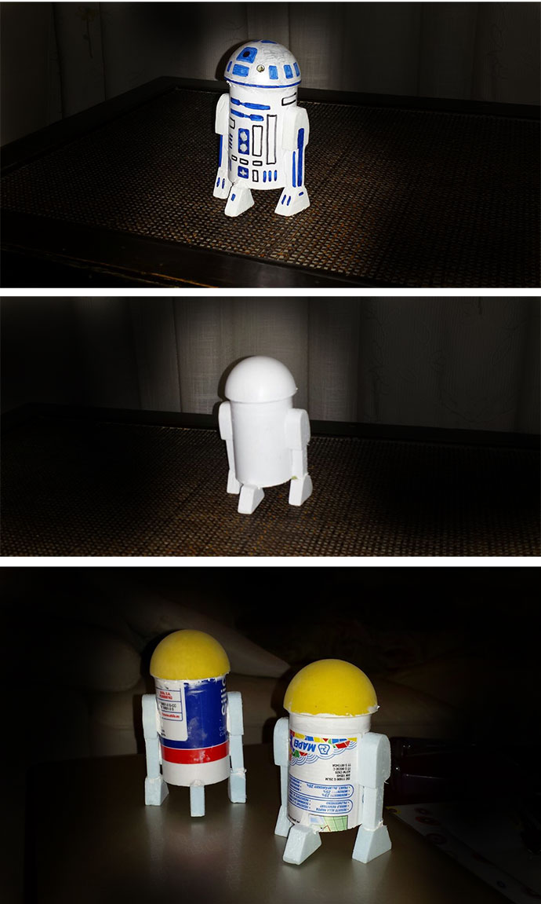
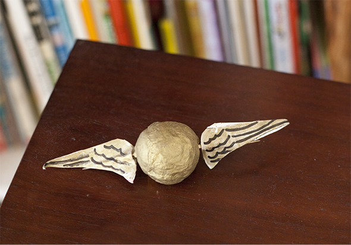
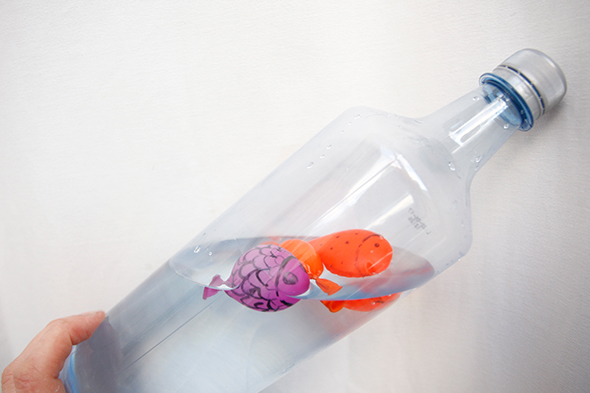
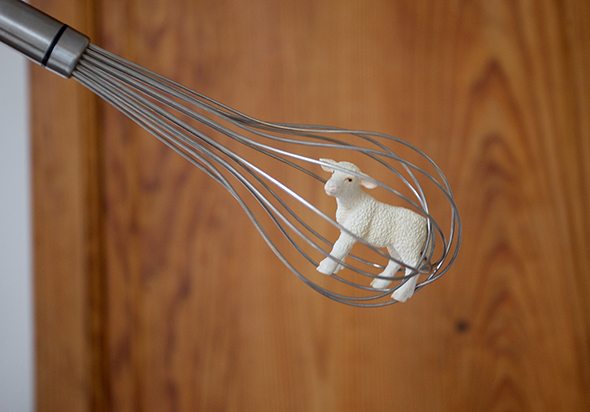

Facebook
Pinterest
Instagram
⌕ Buscar
ES
EN
DE
☰ Menú
Inicio
La casa
Accesorios
Decorar
Instrucciones
Ilustración
Cantimploras personalizadas
Cuaderno de manualidades y actividades 01
App Not Online Anymore
Blog
Fiestas
Navidad
Pascua
Halloween
Carnaval y disfraces
San Valentín
Cumpleaños
Día de la Madre/Padre
Vuelta al cole
Estaciones
Primavera
Verano
Otoño
Invierno
Qué hacer
Juguetes
Juegos
Imprimibles
Recetas y comida
Decoración
Pintar
Experimentos
Al aire libre
Aprender
Animales
Regalos y joyas
Construir y trucos
Otras manualidades
Material
Papel
Cartón
Rollos de papel
Reciclaje
Piedras
Hojas y naturaleza
Tela, coser y tejer
Inicio
›
Blog
›
Juguete
Juguete
Categoría
Material
Seta
Juguete
Charco
Juguete
R2D2

Juguete
Snitch

Juguete
Tirachinas
Juguete
Harry Potter II
Ocasión
Decoración de mesa
Juguete
Magia
Juguete
Portátil
Material
Barcos de nuez
Juguete
3 en raya
Juguete
Equipo eucalipto!
Juguete
Ojos móviles
Juguete
Cocina de muñecas
Juguete
Mar en una botella

Material
X-Wing Starwars
Juguete
Fashion-socks IV
Juguete
Fashion -socks III
Juguete
Fashion Socks II
Juguete
Fashion-Socks I
Juguete
Globos
Juguete
Palo de lluvia
Juguete
Para los más pequeños

Material
Para el perro
Página 1 / 4
Más antiguas →